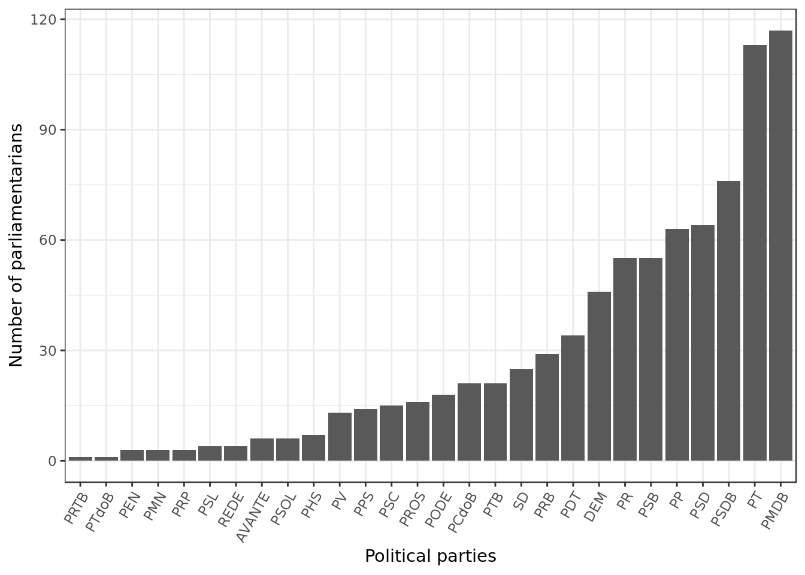

C.E.A.P analysis (suppliers and weekend expenses)
Introduction
This exploratory data analysis was made based on data provided by the Brazilian government about the expenses allowed to its parliamentarians or C.E.A.P. (Cota para o Exercício da Atividade Parlamentar / Quota for the Exercise of Parliamentary Activity). More information about it (in Portuguese) can be found in its official site
Data Overview
data <- read_csv(here::here("evidences/dadosCEAP.csv"),
progress = F,
col_types = cols(
nomeParlamentar = col_character(),
idCadastro = col_integer(),
sgUF = col_character(),
sgPartido = col_character(),
tipoDespesa = col_character(),
especDespesa = col_character(),
fornecedor = col_character(),
CNPJCPF = col_character(),
tipoDocumento = col_integer(),
dataEmissao = col_character(),
valorDocumento = col_double(),
valorGlosa = col_integer(),
valorLíquido = col_double()))
data %>%
mutate(dataEmissao = parse_date_time(dataEmissao,"%Y-%m-%d %H:%M:%S"),
year_month = paste(lubridate::year(dataEmissao), # extract year
lubridate::month(dataEmissao), # extract month
sep = "-"),
tipoDespesa = toupper(tipoDespesa)) -> data
state_info <- read_csv(here::here("/evidences/limiteMensalCEAP.csv"),
progress = F,
col_types = cols(
UF = col_character(),
limite_mensal = col_double()))
data %>%
full_join(state_info,
by = c("sgUF" = "UF")) -> data
data %>%
glimpse()## Observations: 963,452
## Variables: 15
## $ nomeParlamentar <chr> "ABEL MESQUITA JR.", "ABEL MESQUITA JR.", "ABEL …
## $ idCadastro <int> 178957, 178957, 178957, 178957, 178957, 178957, …
## $ sgUF <chr> "RR", "RR", "RR", "RR", "RR", "RR", "RR", "RR", …
## $ sgPartido <chr> "DEM", "DEM", "DEM", "DEM", "DEM", "DEM", "DEM",…
## $ tipoDespesa <chr> "MANUTENÇÃO DE ESCRITÓRIO DE APOIO À ATIVIDADE P…
## $ especDespesa <chr> NA, NA, NA, NA, NA, "Veículos Automotores", "Veí…
## $ fornecedor <chr> "COMPANHIA DE AGUAS E ESGOTOS DE RORAIMA", "COMP…
## $ CNPJCPF <chr> "05939467000115", "05939467000115", "02341470000…
## $ tipoDocumento <int> 0, 0, 0, 0, 0, 0, 0, 0, 0, 0, 0, 0, 0, 0, 0, 0, …
## $ dataEmissao <dttm> 2015-11-14, 2015-12-10, 2015-11-27, 2015-12-30,…
## $ valorDocumento <dbl> 165.65, 59.48, 130.95, 196.53, 310.25, 32.00, 50…
## $ valorGlosa <int> 0, 0, 0, 347, 0, 0, 0, 0, 0, 0, 0, 0, 0, 0, 0, 0…
## $ valorLíquido <dbl> 165.65, 59.48, 130.95, 193.06, 310.25, 32.00, 50…
## $ year_month <chr> "2015-11", "2015-12", "2015-11", "2015-12", "201…
## $ limite_mensal <dbl> 45612.53, 45612.53, 45612.53, 45612.53, 45612.53…read_tsv(here::here("evidences/trsl_expenses.tsv"),
progress = F,
col_types = cols(
original_term = col_character(),
translation = col_character())) -> trsltd_expenses
trsltd_expenses## # A tibble: 18 x 2
## original_term translation
## <chr> <chr>
## 1 MANUTENÇÃO DE ESCRITÓRIO DE APOIO… MAINTENANCE OF OFFICE TO SUPPORT PAR…
## 2 COMBUSTÍVEIS E LUBRIFICANTES. FUELS AND LUBRICANTS.
## 3 CONSULTORIAS, PESQUISAS E TRABALH… CONSULTANCIES, RESEARCH AND TECHNICA…
## 4 DIVULGAÇÃO DA ATIVIDADE PARLAMENT… DIVULGATION OF PARLIAMENTARY ACTIVIT…
## 5 SERVIÇO DE SEGURANÇA PRESTADO POR… SECURITY SERVICE PROVIDED BY SPECIAL…
## 6 PASSAGENS AÉREAS AIRLINE TICKETS
## 7 SERVIÇOS POSTAIS POSTAL SERVICES
## 8 FORNECIMENTO DE ALIMENTAÇÃO DO PA… SUPPLY OF FOOD FOR PARLIAMENTARIAN
## 9 TELEFONIA TELEPHONY
## 10 LOCAÇÃO OU FRETAMENTO DE VEÍCULOS… LEASING OR FREIGHTING OF AUTOMOTIVE …
## 11 LOCAÇÃO OU FRETAMENTO DE EMBARCAÇ… LEASING OR FREIGHTING OF VESSELS
## 12 SERVIÇO DE TÁXI, PEDÁGIO E ESTACI… TAXI SERVICE, TOLL AND PARKING
## 13 EMISSÃO BILHETE AÉREO AIR TICKET ISSUANCE
## 14 HOSPEDAGEM ,EXCETO DO PARLAMENTAR… ACCOMMODATION, EXCEPT OF THE PARLIAM…
## 15 LOCAÇÃO OU FRETAMENTO DE AERONAVES LEASING OR FREIGHTING OF AIRCRAFT
## 16 PASSAGENS TERRESTRES, MARÍTIMAS O… TERRESTRIAL,MARITIME OR FLUVAL TICKE…
## 17 ASSINATURA DE PUBLICAÇÕES SUBSCRIPTION TO PUBLICATIONS
## 18 PARTICIPAÇÃO EM CURSO, PALESTRA O… PARTICIPATION IN COURSE, CONFERENCE …- A translation for the description of each one of the 18 types of expense was recorded alongside its original term.
data %>%
full_join(trsltd_expenses,
by = c("tipoDespesa" = "original_term")) %>%
mutate(tipoDespesa = translation) %>% # translate col tipoDespesa
select(-translation)-> data # drop unused column
data %>%
sample_n(5) %>%
select(nomeParlamentar,
tipoDespesa,
dataEmissao)## # A tibble: 5 x 3
## nomeParlamentar tipoDespesa dataEmissao
## <chr> <chr> <dttm>
## 1 HERÁCLITO FORTES AIR TICKET ISSUANCE 2015-12-19 00:00:00
## 2 LUIZ LAURO FILHO SUPPLY OF FOOD FOR PARLIAMENTARIAN 2015-10-12 00:00:00
## 3 MIGUEL HADDAD AIR TICKET ISSUANCE 2015-09-25 00:00:00
## 4 JOSÉ AIRTON CIRILO AIR TICKET ISSUANCE 2016-01-21 00:00:00
## 5 ALICE PORTUGAL AIR TICKET ISSUANCE 2015-10-28 00:00:00- We now have each term in the column tipoDespesa translated.
data %>%
mutate(week_day = wday(dataEmissao), # extract week day
is_weekend = (week_day == 1) | # deduce whether it's a weekend
(week_day == 7)) -> data
data %>%
select(dataEmissao,
week_day,
is_weekend) %>%
sample_n(5)## # A tibble: 5 x 3
## dataEmissao week_day is_weekend
## <dttm> <dbl> <lgl>
## 1 2016-08-12 00:00:00 6 FALSE
## 2 2015-04-22 00:00:00 4 FALSE
## 3 2017-02-23 00:00:00 5 FALSE
## 4 2017-07-14 00:00:00 6 FALSE
## 5 2016-10-21 00:00:00 6 FALSE- Once we extracted which day of the week the emission was made we simply deduced whether it was a weekend or not.
data %>%
na.omit(year_month) %>%
group_by(year_month) %>% # times used
summarize(total = n()) %>% # by year/month
ggplot(aes(year_month, total)) +
geom_point() +
theme(axis.text.x = element_text(angle = 60,
hjust = 1)) +
labs(x="Year and month", y="Absolute Frequency")- The period of time covered by the dataset is of about 3 years which amounts to the duration of our parliamentarian’s office minus the 120 days prior to the election.
data %>%
group_by(idCadastro,
nomeParlamentar) %>%
slice(1) %>% # keep one entry for parliamentarian
ungroup() %>%
group_by(sgPartido) %>% # calc parliamentarian
summarize(num_parliament = n()) %>% # by party
na.omit() %>%
ggplot(aes(reorder(sgPartido,
num_parliament),
num_parliament)) +
geom_bar(stat="identity") +
labs(x="Political parties",
y="Number of parliamentarians") +
theme(axis.text.x = element_text(angle = 60,
hjust = 1))
- We can see that PMDB detains the majority of offices followed closely by PT and that PSDB is still a major player. This was to be expected as the aforementioned parties are often regarded as the most prominent ones in the Brazilian political scene.
Expenditure during the week and the weekends
data %>%
mutate(month = lubridate::month(dataEmissao)) %>% # extract month
na.omit(week_day,month) %>%
group_by(week_day,month) %>% # times used
summarize(total = sum(valorLíquido)) %>% # by day of week / month
tidyr::spread(key= week_day, value=total,
fill = 0) %>%
select(-month) %>% data.matrix() -> matrix_yearly
colnames(matrix_yearly) <- c("Sun","Mon","Tue","Wed","Thu","Fri","Sat")
x.scale <- list(at=seq(from=1,to=12,by=1))
levelplot(matrix_yearly,
col.regions=heat.colors,
scales=list(x=x.scale),
main="Total expenditure across days of the week",
xlab="month of the year", ylab= "week day")- Overall we can see a clear predominance of expenditures during the week as both saturday and sunday have a smaller total expenditure across the whole year.
- It was to be expected, as CEAP is meant to be used to pay for work related expenses.
data %>%
group_by(is_weekend,sgPartido) %>%
summarize(total_cost = sum(valorLíquido)) %>%
na.omit(is_weekend) -> party_expense
party_expense %>%
ungroup() %>%
sample_n(5)## # A tibble: 5 x 3
## is_weekend sgPartido total_cost
## <lgl> <chr> <dbl>
## 1 TRUE PODE 985047.
## 2 FALSE SD 14996297.
## 3 TRUE REDE 189057.
## 4 FALSE PSDB 49267589.
## 5 TRUE PRTB 13512.- Now we have the total cost incurred by each party during the week and during the weekend.
ggplot(data= party_expense,
aes(reorder(sgPartido,
total_cost),
total_cost,
fill=is_weekend)) +
geom_bar(data=subset(party_expense,
!is_weekend),
stat = "identity") +
geom_bar(data=subset(party_expense,
is_weekend),
aes(y=-total_cost),
stat = "identity") +
coord_flip() +
labs(x="Political parties",
y="Total expenditure (R$)")- Across different political parties the strong predominance of expenditures during the week holds.
- PMDB is the biggest spender.
- PMDB, PT and PSDB are the parties with the highest number of offices, therefore it’s reasonable that they are the ones to spend the most.
Which parties spent the most during the weekend?
data %>%
filter(is_weekend) %>%
group_by(is_weekend,sgPartido) %>%
summarize(total_cost = sum(valorLíquido)) %>%
na.omit(is_weekend) %>%
ggplot(aes(reorder(sgPartido,
total_cost),
total_cost)) +
geom_bar(stat="identity",
fill="#00BFC4") +
labs(x="Political parties",
y="Total expenditure (R$)",
title="Expenditures during the weekend") +
theme(axis.text.x = element_text(angle = 60,
hjust = 1))- PMDB, PT and PSDB are also the ones to spend the highest amount of money during the weekend.
- Despite the fact that overall PMDB is the biggest spender (as seen before) PT spent the most during the weekend.
PMDB, PT and PSDB spent the most during the weekend.
Which parties had most of their expenditures made during the weekend?
data %>%
na.omit(is_weekend,
sgPartido) %>%
group_by(sgPartido) %>%
mutate(total = sum(valorLíquido)) %>% # calc total cost by party
ungroup() %>%
group_by(total,
sgPartido,
is_weekend) %>% # calc cost by weekdays
summarize(total_cost = sum(valorLíquido)) %>% # and by weekends
mutate(fract = total_cost/total) %>% # calc fraction
filter(is_weekend) %>%
ggplot(aes(reorder(sgPartido,fract),
fract)) +
geom_bar(stat="identity",
fill="#00BFC4") +
labs(x="Political parties",
y="Percentage (%)",
title="Expenditures during the weekend in R$") +
scale_y_continuous(labels = scales::percent) +
theme(axis.text.x = element_text(angle = 60,
hjust = 1))- Unexpectedly, we see as leader the party PRTB (ironically named Brazilian Labour Renewal Party) that made almost \(40\%\) of its expenditures during the weekend.
- PT not only spent a great amount of money during the weekend as seen before, but had a substantial fraction of its expenditures made during the weekend.
- We can see that parties like PV and PSC which were obscured in terms of overall expense, stand out as some of the parties who spent a good part of their budget during the weekend.
PRTB was the party to have most of its expenditures made during the weekend.
Looking at the cost of the suppliers
What were the costliest suppliers (in terms of median)? What services did they offer?
Let’s separate the top 10 most expensive suppliers. They will be selected by their median cost across all parties.
data %>%
mutate(fornecedor = toupper(fornecedor)) %>%
mutate(fornecedor = ifelse( # shorten the name
fornecedor == "TODDE ADVOGADOS E CONSULTORES ASSOCIADOS",
"TODDE ADVOGADOS",
fornecedor)) %>%
group_by(fornecedor,
sgPartido,
tipoDespesa) %>% # calc expense of each
summarize(total_cost = sum(valorLíquido)) %>% # supplier for each party
ungroup() %>%
group_by(fornecedor) %>% # calc median expense of
mutate(median_expense = median(total_cost)) %>% # each supplier (all parties)
ungroup() -> supplier_data
supplier_data %>%
select(fornecedor,
median_expense,
sgPartido,
total_cost) %>%
sample_n(5)## # A tibble: 5 x 4
## fornecedor median_expense sgPartido total_cost
## <chr> <dbl> <chr> <dbl>
## 1 EMPRESA GONTIJO DE TRANSPORTES LIMIT… 242. PR 106.
## 2 DM ALIMENTAÇAO SAUDAVEL 84.5 PT 84.5
## 3 POSTO JAMBREIRO LTDA 200 PSDB 100
## 4 VIVO - TELEFONICA S.A 1371. PMDB 1371.
## 5 AUTO POSTO ENTRE TREVOS 200 PPS 220.- Now that we have the median cost of each supplier we can examine how the top 10 most expensive suppliers relate to the parties.
supplier_data %>%
select(median_expense) %>%
unique() %>%
arrange(desc(median_expense)) %>%
slice(10) -> tenth_supplier # 10th biggest median cost
supplier_data %>%
group_by(fornecedor,
sgPartido,
tipoDespesa) %>%
filter(median_expense >= tenth_supplier) %>% # filter top 10 suppliers
ggplot(aes(reorder(fornecedor,
median_expense),
total_cost,
color=tipoDespesa)) +
geom_boxplot() +
labs(x="Supplier",
y="Cost (R$)",
color=NULL) +
coord_flip()+
theme(legend.position="bottom",
legend.direction = "vertical") +
theme(legend.text=element_text(size=8),
axis.text.y = element_text(size=8))- TAM and GOL which are both air flight companies have the most diverse behavior, accounting for the lowest cost in the top 10 but majoritarily being the costliest suppliers of all.
- In terms of median the air flight companies TAM and GOL take first and second place as costliest suppliers of all with \(\color{red}{\text{Air Ticket Issuance}}\)
- The rest of the suppliers are plainly less erratic.
- Publicity and advertising companies such as STILO GRAFICA and GRAFICA SATELITE take the third and fourth place with \(\color{blue}{\text{Divulgation of parliamentary activity}}\).
- The law firm Todde advogados e consultores associados takes the fifth place with \(\color{darkgreen}{\text{Consultancies, research and technical works}}\)
The costliest suppliers of all were TAM and GOL with Air Ticket Issuance